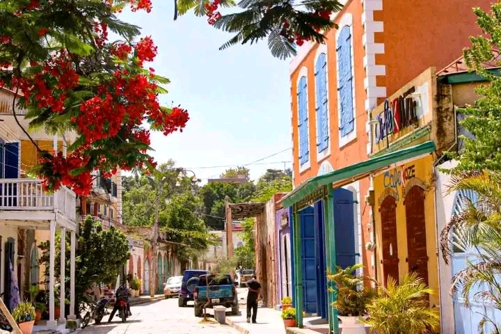

À propos de Jacmel
Histoire
Fondée en 1698, Jacmel a joué un rôle clé dans le commerce du café et la libération de l'Amérique du Sud, en accueillant le libérateur Simón Bolívar en 1816. Jacmel est une commune d'Haïti, chef-lieu du département du Sud-Est et de l'arrondissement de Jacmel. La ville coloniale fut bâtie par les français à la fin du XVIIe siècle[1]. C'est l'une des principales villes touristiques du pays. Géographie La ville se trouve sur la rive gauche de l'embouchure de la rivière de la Cosse (appelée aussi « Grande Rivière de Jacmel »), à l'endroit où celle-ci se jette dans la baie de Jacmel. La rivière des Orangers traverse la ville de Jacmel, avant d'aller se jeter dans la Grande Rivière de Jacmel au niveau de son embouchure sur la baie de Jacmel. À l'ouest, se trouve l'embouchure de la Petite Rivière de Jacmel, et son site naturel et touristique de Bassin Bleu. Démographie La commune est peuplée de 221 965 habitants[2](recensement par estimation de 2024). Administration La commune est composée des onze sections rurales de : Bas Cap Rouge (Orangers) Fond Melon (Selles) Cochon Gras La Gosseline Marbial Montagne La Voûte Grande Rivière de jacmel Bas Coq Chante Haut Coq Chante La Vanneau La Montagne Histoire Baye de Jaquemel, dessin de Nicolas Ozanne et gravure de Nicolas Ponce, 1791. Jacques Mel, marchand et capitaine de navire de Dieppe (France), a donné au milieu du XVIIe siècle son nom à la baie et à la rivière au bord de laquelle la ville s'est développée. Fondée en 1698 par la Compagnie de Saint-Domingue, Jacmel a prospéré grâce au commerce maritime. Fin 1791, lors de la Révolution haïtienne, Romaine-la-Prophétesse (avec au moins dix mille partisans, en grande partie d'anciens esclaves) assiégeait et occupait Jacmel. Jacmel est alors un port stratégique; il est contesté en juin 1799 par les généraux Toussaint Louverture et André Rigaud qui entrent en guerre l'un contre l'autre lors de la guerre des couteaux. Les forces de Toussaint Louverture assiègent la ville en novembre 1799 . C'est Rigaud — le futur président Alexandre Pétion —, qui défend Jacmel, qui chute en mars 1800. Une véritable guerre d’extermination est alors menée contre les mulâtres du Sud; près de 10 000 d’entre eux périssent malgré l'intervention de l'officier supérieur Magloire Ambroise, qui sauve la vie de centaines de familles respectées à Jacmel et est alors considéré comme un héros par la population de cette ville à cette époque. Il est nommé commandant de Jacmel en 1802 par Jean-Jacques Dessalines et Rigaud est exilé en France. Le drapeau vénézuélien fut créé à Jacmel. Le 12 janvier 2010, Jacmel fut sérieusement endommagée par le tremblement de terre d'Haïti de 2010 meurtrier (qui toucha surtout l'agglomération de Port-au-Prince, la capitale haïtienne). Selon Fednel Zidor, vice-délégué (équivalent d'un sous-préfet[Où ?]) du département du Sud-Est, celui-ci évoque une ville détruite à 60-80 %, la ville basse (les quartiers populaires et le centre historique), étant la plus atteinte. Économie À Jacmel, la vie économique est animée par le dynamisme du commerce, qui constitue la principale activité de la ville. Une caractéristique notable de cette communauté est que la plupart des jeunes, en particulier les hommes, sont engagés dans le secteur du transport, avec une prédominance marquée dans le métier de conducteurs de taxi-moto. La ville, riche en créativité, se distingue également par sa production artisanale variée. Les artisans jacméliens sont réputés pour leur expertise dans divers domaines tels que le papier mâché, le travail du bois, la peinture sur tissu, la confection de bijoux, et la broderie de style Richelieu. Cette diversité artistique contribue à l'identité culturelle unique de Jacmel, faisant de la ville un véritable foyer d'expression artistique et artisanale dans la région.

Situation géographique
Jacmel est située sur la côte sud de la presqu'île du Sud d'Haïti, bordée par la mer des Caraïbes. Elle est le chef-lieu du département du Sud-Est. Jacmel est une commune d'Haïti, chef-lieu du département du Sud-Est et de l'arrondissement de Jacmel.La ville de Jacmel bénéficie d'une situation géographique stratégique et pittoresque sur la côte sud d'Haïti : Localisation administrative : Jacmel est le chef-lieu du département du Sud-Est d'Haïti. Position géographique : La ville se situe sur la côte sud de la péninsule de Tiburon, au bord de la mer des Caraïbes (baie de Jacmel). Distance des grands centres : Elle est située à environ 85 à 90 kilomètres au sud-ouest de la capitale, Port-au-Prince. Relief et paysage : La ville s'étend entre le littoral et le contrefort du massif de la Selle, offrant un paysage dominé par des montagnes escarpées qui se jettent vers la mer et traversé par la rivière de la Cosse.

Importance culturelle
Ville d'art et d'artisans, Jacmel est célèbre pour son Carnaval haut en couleur, ses pièces en papier mâché et son école nationale des arts. Jacmel est largement considérée comme la capitale culturelle et artistique d'Haïti. Son importance repose sur un riche patrimoine architectural, une tradition artisanale unique et une émulation littéraire et festive remarquable. 1. Le Carnaval de Jacmel et l'artisanat du papier mâché Le Carnaval de Jacmel est l'un des événements folkloriques les plus réputés des Caraïbes. Il se distingue par : Masques géants en papier mâché : Les artisans jacmeliens créent des pièces spectaculaires représentant la faune, la flore, la mythologie vaudou ou des figures satiriques de la société. Théâtre de rue critique : Les troupes théâtrales déambulent dans la ville en jouant des pièces improvisées sur l'actualité politique et sociale. 2. Patrimoine architectural du XIXe siècle Grâce à la prospérité du commerce du café à la fin du XIXe siècle, la ville possède un centre historique à l'architecture remarquable : Maisons à colonnades et fer forgé : Importées de France et des États-Unis, ces structures ont inspiré le style architectural du Vieux Carré à La Nouvelle-Orléans. Projet UNESCO : Le centre historique de Jacmel est inscrit sur la liste indicative du patrimoine mondial de l'UNESCO. 3. Foyer littéraire, cinématographique et pictural Jacmel a toujours été une terre d'inspiration pour les artistes haïtiens et internationaux : Littérature : Patrie de grands écrivains comme René Depestre et Jean Métellus, Jacmel est le décor de chef-d'œuvres tels que Hadriana dans tous mes rêves. Cinéma et Formation : La ville accueille l'école de cinéma Ciné Institute, formant les futures générations de cinéastes haïtiens. Mosaïque et Peinture : Les rues de la ville sont décorées de fresques en mosaïque contemporaine, et de nombreuses galeries d'art naïf y sont implantées.